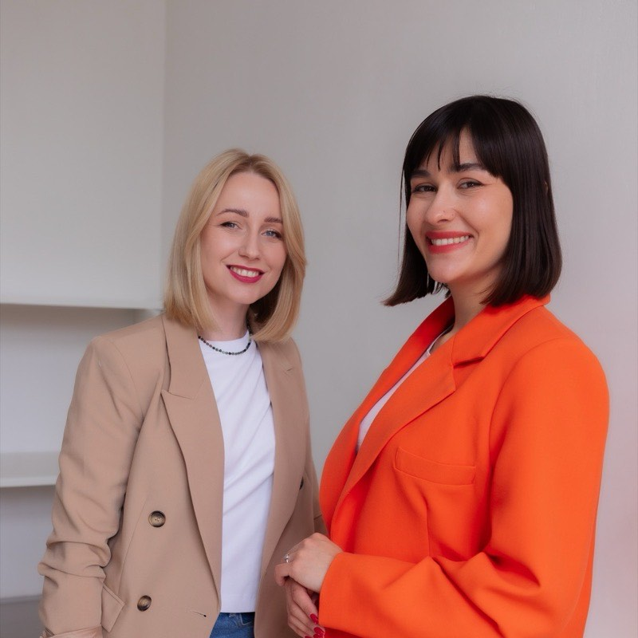

Skala problemu
Co mierzymy na wejściu
14 htygodniowo na spotkaniach zarządu
3osoby, przez które przechodzi każda decyzja
0spisanych zasad eskalacji
Skala problemu
Cztery tygodnie
Kto prowadzi
Ponad 10 lat w operacjach, HR i pracy z zarządami. Certyfikacje PCM i Analizy Transakcyjnej.

Co dostajecie
Rekomendacja
Po diagnozie przestaliśmy się kłócić o to, czyja to decyzja. To był cały problem.
COO, firma produkcyjna, 140 osób
Zakres
Rozmowy 1:1 z zarządem i jedna sesja zwrotna.
Cztery tygodnie: rozmowy, obserwacja spotkań, mapa decyzji, priorytety.
Zostajemy na kwartał i prowadzimy pierwsze zmiany.